Example: Yaskawa GP50
This workshop creates a MoveIt configuration package for the Yaskawa Motoman GP50 and uses the generated package to plan motions in RViz.
Prerequisites
This tutorial uses ROS 2 Humble and assumes that:
the workspace is located at
/home/ros/ros2_ws;motoman_gp50_supportis available in the workspace source directory; andMoveIt and the MoveIt Setup Assistant are installed.
1. Build the robot support package
Open a terminal and build the GP50 description and its dependencies:
source /opt/ros/humble/setup.bash
cd /home/ros/ros2_ws
colcon build --packages-up-to motoman_gp50_support
source install/setup.bash
2. Start the MoveIt Setup Assistant
ros2 run moveit_setup_assistant moveit_setup_assistant
Select Create New MoveIt Configuration Package and load this Xacro file:
/home/ros/ros2_ws/src/motoman_ros2_support_packages/motoman_gp50_support/urdf/gp50.xacro
The robot model should appear in the preview.
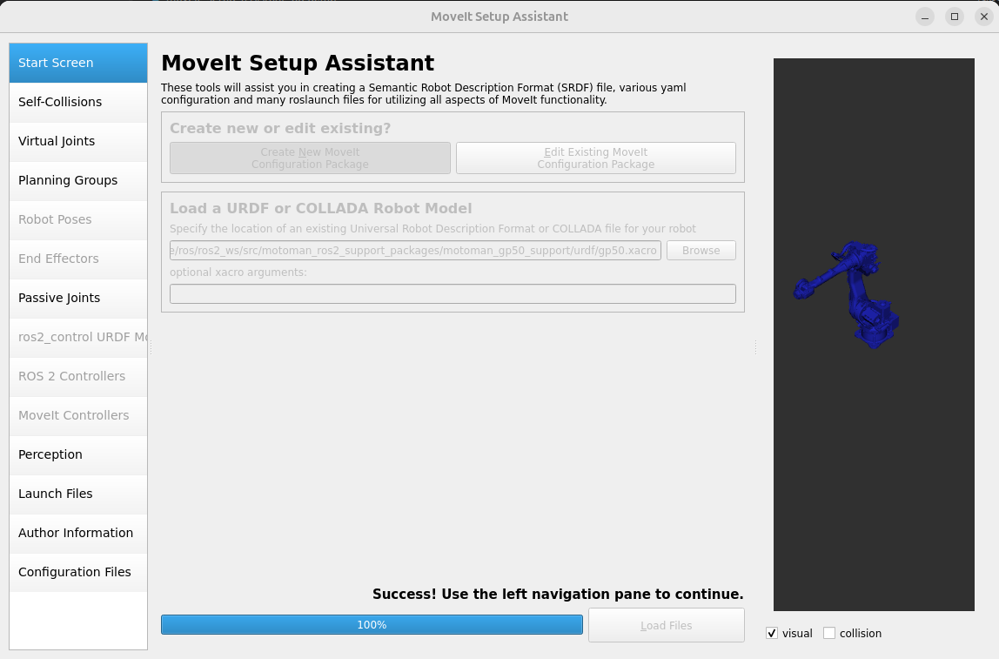
3. Generate the self-collision matrix
Open Self-Collisions, generate the collision matrix, and review the link pairs disabled because they are adjacent or never collide.
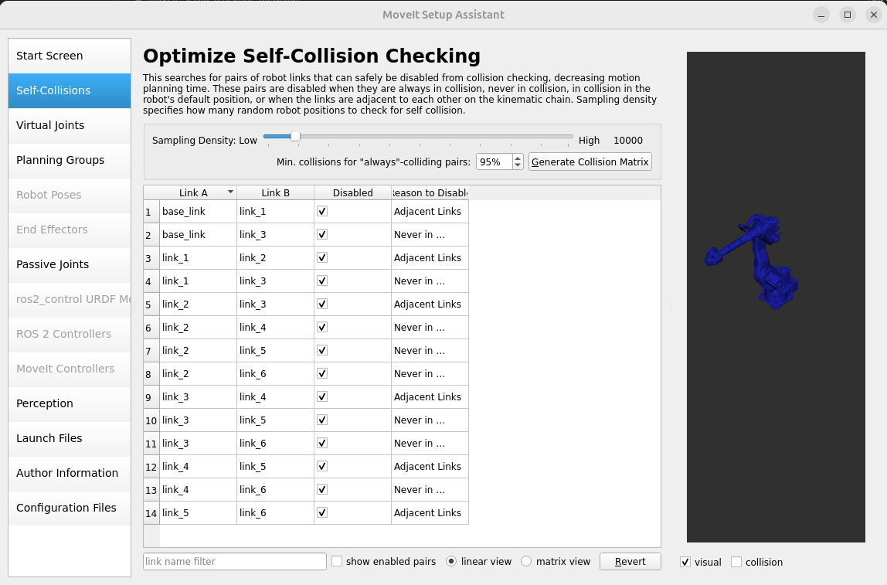
The GP50 is a fixed industrial arm. A virtual joint is unnecessary when its base is already fixed by the robot description.
4. Configure the planning group
Open Planning Groups and select Add Group.
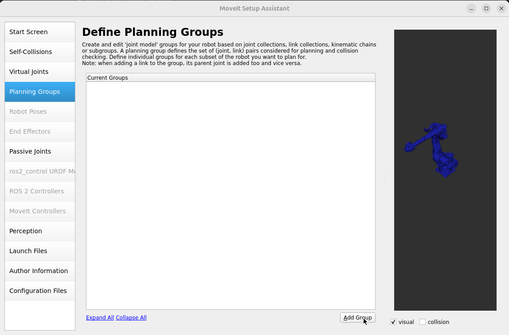
Configure the group with:
Group name:
gp50_armKinematic solver:
kdl_kinematics_plugin/KDLKinematicsPluginSearch resolution:
0.005Search timeout:
0.005Default planner:
RRTConnect
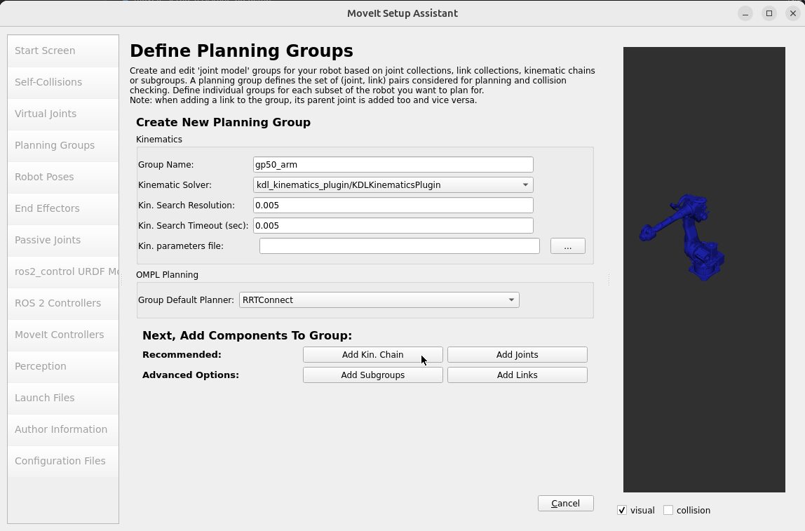
Add a kinematic chain using:
Base link:
base_linkTip link:
tool0
Save the group after selecting both links.
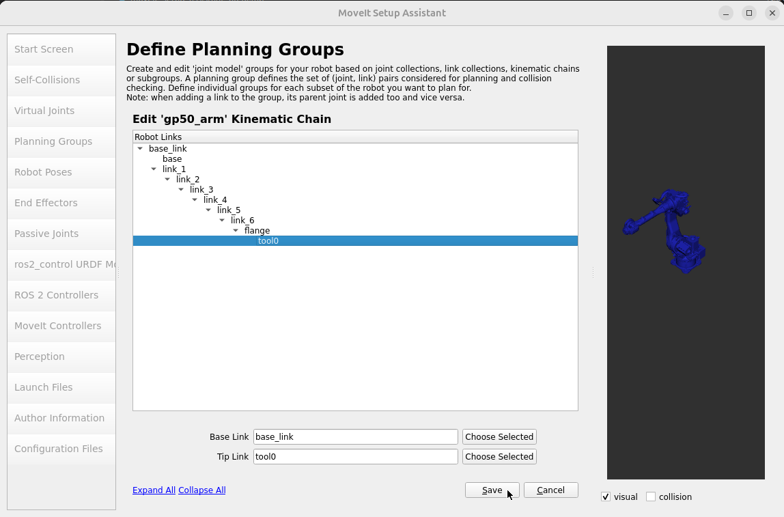
5. Define robot poses
Open Robot Poses and add useful named states for gp50_arm. Define HOME
with all six joints at zero.
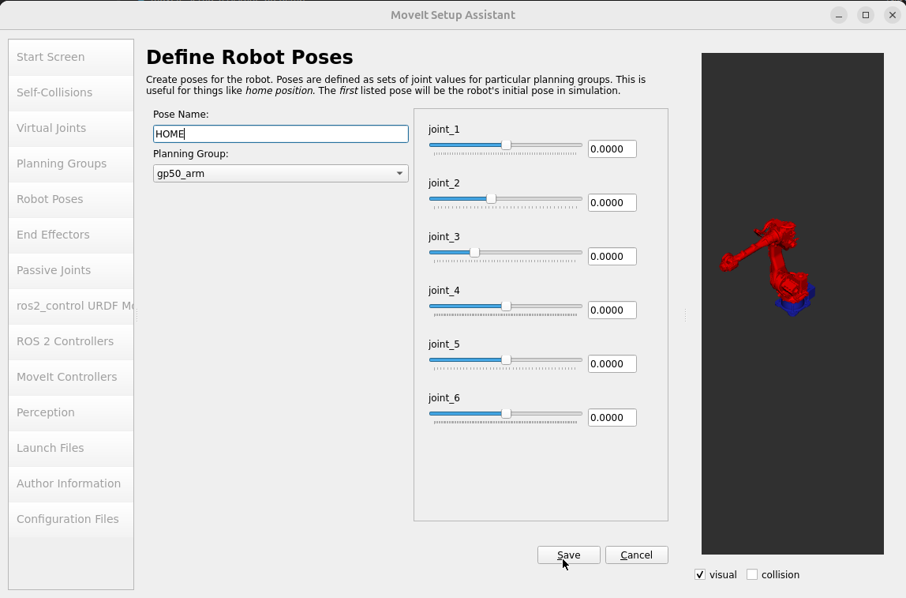
Add an UP pose by adjusting the joints to the required upright
configuration.
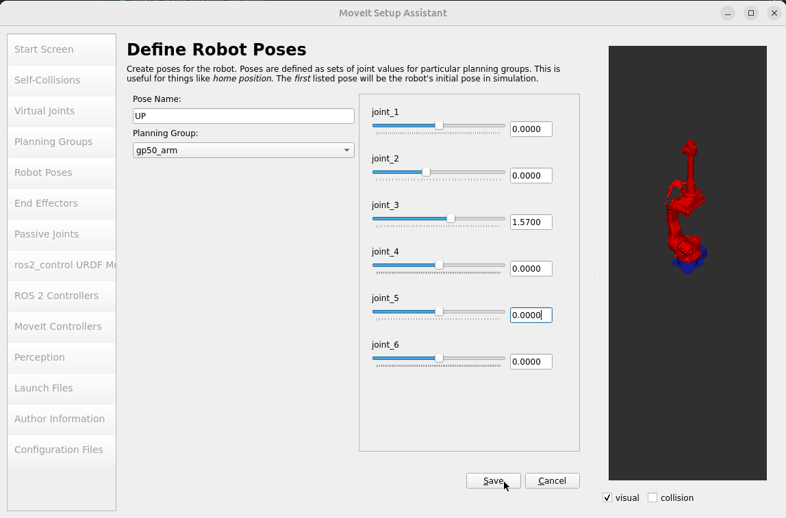
Review the saved HOME, UP, and DOWN poses before continuing.
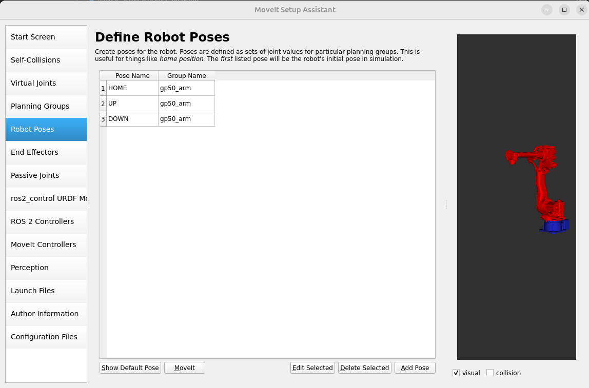
6. Configure ros2_control
Open ros2_control URDF Modifications. Add a position command interface
and position and velocity state interfaces for the six arm joints.
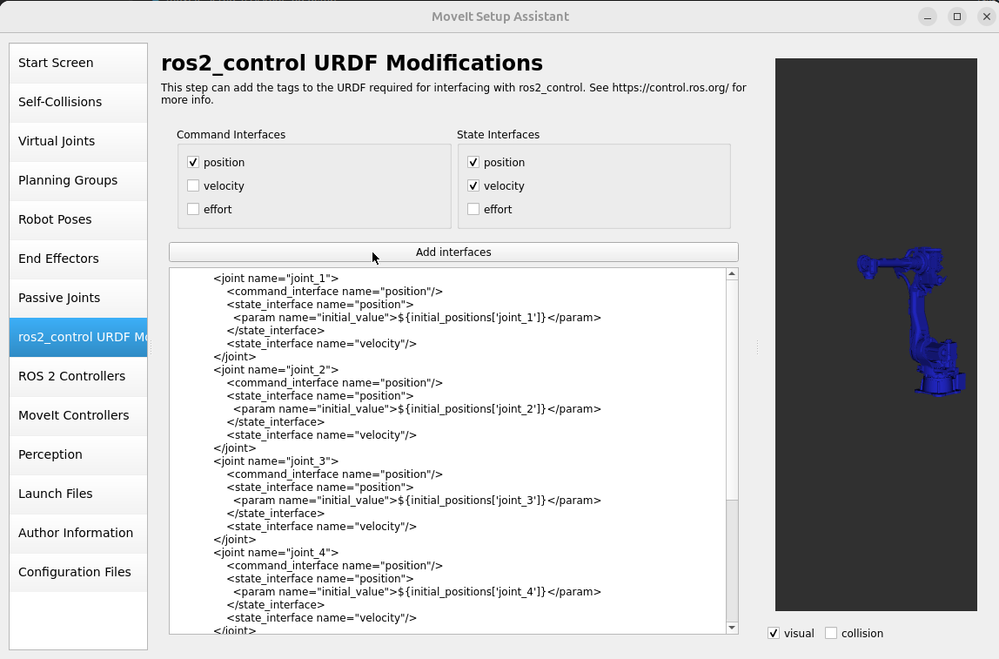
7. Configure the controllers
Open ROS 2 Controllers and use Auto Add JointTrajectoryController
Controllers For Each Planning Group. This creates a trajectory controller for
gp50_arm.
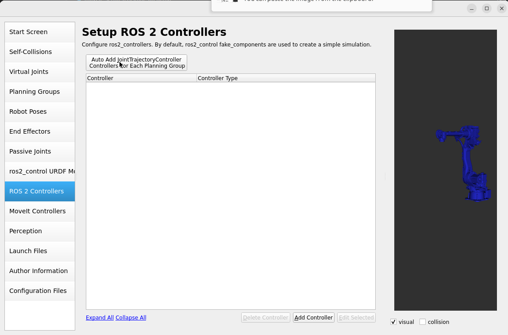
Open MoveIt Controllers and auto-add the corresponding
FollowJointTrajectory controller. Confirm that gp50_arm_controller contains
joint_1 through joint_6.
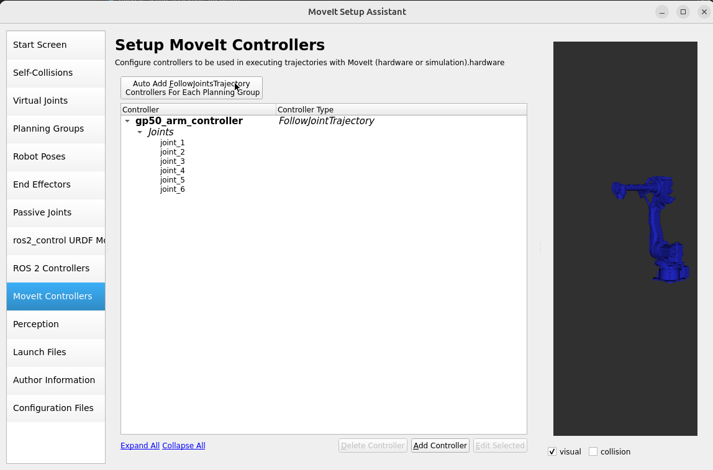
Skip Perception unless the robot uses a configured 3D sensor. Add your name and email under Author Information.
8. Generate the configuration package
Open Launch Files and select the launch files required for the demo. The warehouse database launch file is optional.
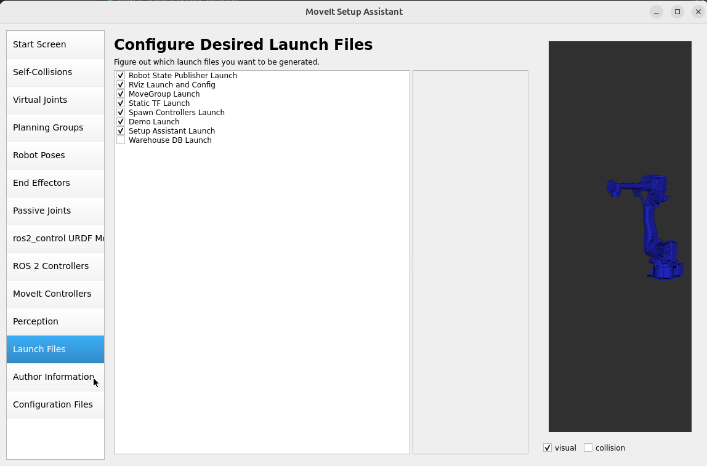
Open Configuration Files and use this output directory:
/home/ros/ros2_ws/src/yaskawa_gp50_moveit_config
Review the generated files and select Generate Package.
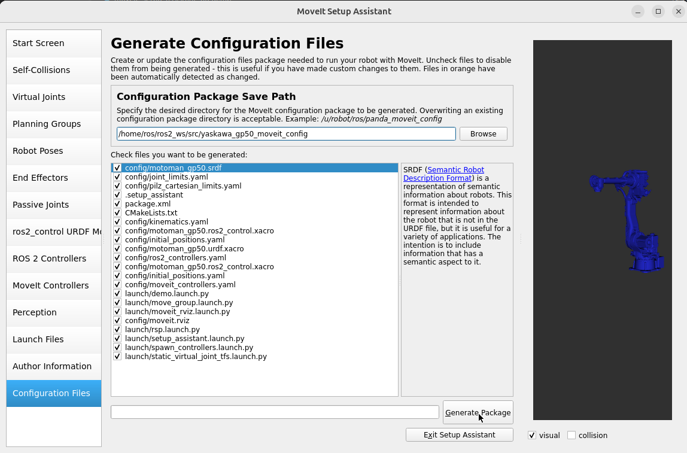
9. Check the joint limits
Open the generated file:
/home/ros/ros2_ws/src/yaskawa_gp50_moveit_config/config/joint_limits.yaml
MoveIt Humble expects floating-point joint-limit values. Replace integer values
such as 2 or 0 with 2.0 or 0.0 where required.
10. Build and run the demo
Build the generated package and source the workspace again:
cd /home/ros/ros2_ws
colcon build --packages-up-to yaskawa_gp50_moveit_config
source install/setup.bash
Launch the MoveIt demo:
ros2 launch yaskawa_gp50_moveit_config demo.launch.py
In the RViz MotionPlanning panel, select gp50_arm as the planning group.
Choose one of the named states, then use Plan or Plan & Execute to test
the generated configuration.
GP50 MoveIt demonstrations
Demonstration 1
Demonstration 2
Add a box as a collider:
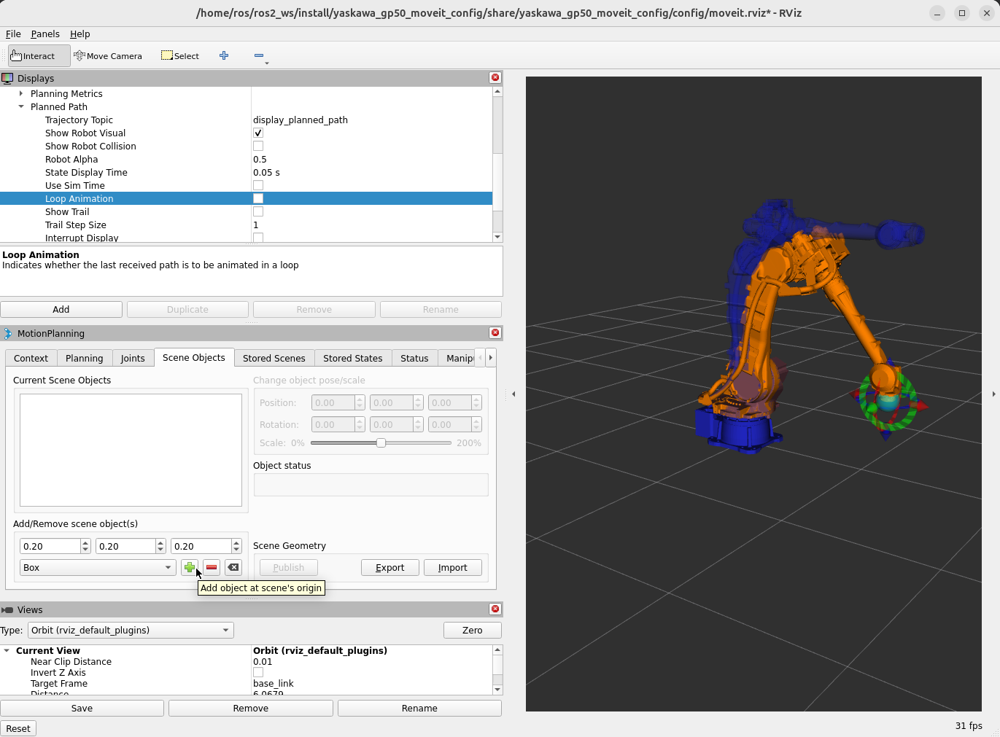
And regenerate the plan: